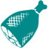

Caracol-Gigante
HerbívoroAlossauro
Carnívoro
Anquilossauro
Herbívoro
Arqueopterix
Carnívoro
Argentavis
Necrófago
Centopéia-Gigante
Necrófago
| Atributos | Valores Base | Level Up Selvagem | Level Up Domesticado |
 Saúde Saúde |
75 | +15 | +5.4% |
 Energia Energia |
100 | +10 | +10% |
| Oxigênio | N/A | N/A | N/A |
| Comida | 450 | +45 | +10% |
 Peso Peso |
600 | +12 | +4% |
 Dano corpo-a-corpo Dano corpo-a-corpo |
0 | +0 | + 1.7% |
 Velocidade de movimento Velocidade de movimento |
100% | N/A | +1% |
| Entorpecimento | 50 | +3 | N/A |
Espécies:
Achatina limusegnis
Tempo:
Holoceno
Dieta:
Herbívoro
Temperamento:
Passiva
Selvagem
Encontrado principalmente em pântanos e selvas, a Achatina limusegnis é um molusco terrestre muito lento e não ameaçador. Pode ser a criatura mais simples da Ilha para caçar e, embora forneça apenas uma pequena quantidade de carne e quitina, uma refeição fácil é sempre valiosa na Ilha. Ao contrário de quase todas as outras criaturas da Ilha, a Achatina não defeca normalmente. Em vez disso, secreta uma substância espessa e pegajosa. A Achatina deixa rastros desse lodo, mas os rastros são tão finos que se transformam em pó rapidamente.
Domesticado
Há um fato muito nojento, mas útil, sobre Achatina que faz com que as tribos procurem domá-los: suas secreções são quimicamente semelhantes à "Pasta de Cimentação" e ao "Polímero Orgânico" usado por muitas tribos para materiais de construção. A Achatina domesticada acumula naturalmente esse lodo ao longo do tempo, que pode ser coletado conforme a conveniência da tribo. Diz a lenda que a Achatina pode ser domado com um "bolo" especial feito de colheitas e recursos colhidos.
~Helena
O Caracol-Gigante passa seus dias movendo-se lentamente em seu grande pé musculoso, deixando um rastro de lodo; e presta pouca atenção a tudo ao seu redor enquanto pasta em pequenas plantas e musgos. Achatina é uma das poucas criaturas verdadeiramente dóceis na Ilha e em outros mapas, pois fugirá, embora em um ritmo muito lento, até se machucar tanto que se esconderá em sua concha. Seu comportamento de se esconder em sua concha também é compartilhado pelo Doedicurus . Dentro desta concha, não pode ser ferido, a menos que um sobrevivente tente incansavelmente romper com uma arma ou domar. Usar flechas de pedra e atirar no fundo do projétil causará danos, embora você possa precisar de muitas flechas, dependendo da sua arma.
Este enorme caracol pode ser comumente encontrado em biomas úmidos, como florestas de sequoias e coníferas, pântanos, a cidade Santuário em Extinção e a Zona Azul em Aberração . Cavernas de terra arrasada têm uma variante de alto nível da Achatina. A Achatina está visivelmente ausente da simulação de Gênesis: Parte 1 . Curiosamente e muito diferente dos caracóis da terra moderna, a Achatina das Arcas pode ocasionalmente ser encontrada submersa na água sem se afogar.
Não é nem um pouco inteligente, embora pareça que seu prazer gastronômico de alimentos doces como bolos de vegetais doces possa ser explorado para reivindicá-lo como manso.
Estratégia de KO
Como o dano é significativamente reduzido pelo projétil, é melhor acertá-lo nas partes macias e carnudas. Se sofrer dano suficiente, ele recuará para sua concha, tornando muito fácil matá-lo antes que o torpor dos tranquilizantes possa derrubá-lo. Esteja ciente de quão sangrenta a Achatina fica e use Dardos Tranquilizantes Chocantes ou Dardos Tranquilizantes normais para minimizar esse risco.
Comida preferida
Bolo Doce de Legumes
Comida depois de domar
Uma Achatina domesticado só comerá Bolo Doce de Legumes, por isso é aconselhável não domar uma Achatina a menos que tenha um suprimento constante de Seiva, Mel de Abelha Gigante, e plantações como Batatas para fazer bolos.
Observe que todos as pilhas de bolos entrarão em um cooldown de 30 segundos após o consumo, durante o qual o jogo fará com que o caracol pense temporariamente que não há comida no inventário.
Em geral
Se engajado e danificado, a Achatina recuará em sua concha e não fugirá nem lutará. O dano causado à Achatina será fortemente reduzido enquanto estiver dentro de sua concha. Achatinas, no entanto, soltam uma quantidade considerável de quitina quando colhidas, por isso são uma matança digna para quem procura coletá-la, às custas do tempo e esforço necessários para matar uma.
Estratégia
Embora a Achatina em si não seja perigosa, seus arredores geralmente estão cheios de predadores perigosos. Limpe a área de criaturas hostis antes de tentar domar Achatinas, ou pegue-as com uma montaria voadora. Um Argentavis pode carregar dois Achatina ao mesmo tempo usando suas garras e bico
Armamento
Qualquer arma ou criatura será capaz de matar suficientemente um Achatina em pouco tempo, embora se deva atirar no Achatina com dardos tranquilizantes para derrubá-lo para domar, pois há pouco benefício em exterminá-los.
Fraquezas
Achatinas selvagens às vezes recebem dano ao longo do tempo aleatoriamente como resultado de serem nocauteadas por Titanoboas, acordando e tendo sua comida reduzida a 0 no processo.
Achatinas - selvagens e domesticadas - não revidam e não podem revidar quando atacado.
| Atributos | Valores Base | Level Up Selvagem | Level Up Domesticado |
| Saúde |
630 | +126 | +5.4% |
| Energia |
250 | +25 | +10% |
| Oxigênio | 150 | +15 | +10% |
| Comida | 3000 | +300 | +10% |
| Peso |
380 | +7.6 | +4% |
| Dano corpo-a-corpo |
25/35 | +1.25/+1.75 | + 1.7% |
| Velocidade de movimento |
100% | N/A | +1% |
| Entorpecimento | 1000 | +60 | N/A |
Espécies:
Allosaurus therotribus
Tempo:
Jurássico Superior
Dieta:
Carnívoro
Temperamento:
Agressivo
Selvagem
Menor, mas mais rápido que o Tiranossauro, maior, mas mais lento que o Carnotaurus, o Allosaurus therotribus é o terópode residente da ilha. Enquanto os terópodes mais agressivos são criaturas relativamente solitárias, o Allosaurus vive em grupos de 3. Um Allosaurus é o alfa, enquanto os outros são seus companheiros ou um macho beta. Assim como os humanos valorizam a formação de uma tribo, o Allosaurus evoluiu para caçar em bandos. Seus dentes em forma de serra deixam sua presa sangrando e mutilada, dificultando a fuga. Uma vez que um Allosaurus desacelera uma criatura com sua mordida cortante, o resto de sua matilha rapidamente se aproxima para matar.
Domesticado
Nem todo mundo acha que um Allosaurus domesticado é o ideal. Aqueles que apreciam a velocidade geralmente domam o Carnotaurus, enquanto aqueles que valorizam o poder de parada bruto domam o Tyrannosaurus. No entanto, os cavaleiros do Allosaurus tendem a respeitar a utilidade de seu status de pacote Alpha, que, juntamente com seus ataques indutores de sangramento e mobilidade relativa, pode efetivamente mudar a maré de uma batalha de armas combinadas.
~Helena
O Allosaurus é um predador extremamente agressivo e perigoso, ainda mais quando acompanhado por seus companheiros de matilha sempre presentes. Aproxime-se com cautela - você nem sempre pode ter visão de seus aliados próximos ao se aproximar de um Allosaurus isolado.
Bando
Allosaurus geralmente aparecem em bandos de 3, mas os bandos irão se fundir se eles se encontrarem. Enquanto um bando tiver 3 ou mais Allosaurus nele, o Allosaurus com o nível mais alto receberá um boost de pacote, que pode ser identificado por uma aura vermelho-alaranjada brilhante, semelhante à de um Alpha Predator . O boost de pacote se aplica tanto a Allosaurus selvagem quanto domesticado e oferece os seguintes benefícios:
- Aumenta o dano causado em 50%;
- Reduz o dano recebido em 25%;
- Um ataque extra que retarda o alvo e causa dano de sangramento;
- A capacidade de rugir enquanto domado e montado Quando o Alpha rugir, os outros em sua matilha também rugirão.
Esses buffs só se aplicam ao Allosaurus com o Alpha Boost. No entanto, em bandos maiores, vários Allosaurus às vezes podem se tornar o Alpha. Especialmente em múltiplos de 3.
Estratégia de KO
O Allosaurus tem alto torpor, semelhante a um Rex , mas doma rapidamente uma vez inconsciente. A melhor maneira de enfrentar um Allosaurus é destacar um animal solitário de sua matilha. Tenha cuidado para não matar os outros enquanto o doma, porque o Allosaurus solitário fugirá em busca de um novo pacote se o antigo for morto. Para combater isso, o Allosaurus alvo deve ser atraído para um recinto e devidamente protegido antes de enfrentar o resto de sua matilha. Essa estratégia, em particular, é útil se você quiser domar o alfa Allosaurus, pois separar e matar seus companheiros de matilha removerá seu buff Alpha, enfraquecendo-o significativamente. Tenha cuidado, pois níveis mais altos são fáceis de matar com arcos e bestas se você não pausar entre os disparos. Domar mais de um Allosaurus ao mesmo tempo é arriscado.
Tentativas solo exigem uma abordagem muito cuidadosa: não só é imprudente atacar um pacote de Allosaurus sozinho, mas as áreas onde o Allosaurus desova também provavelmente estarão rastejando com muitos outros predadores perigosos. A melhor maneira de fazer isso é se posicionar em uma pedra alta, de preferência pousada por um voador, para protegê-lo de seus ataques. Depois que um Allosaurus for atingido por seu Dardo Tranquilizador ou Flecha Tranquilizadora , ele e o resto de sua matilha se tornarão agressivos com você. Continue atirando, certificando-se de mirar na cabeça e pausar entre os disparos, especialmente ao usar uma Besta. Você deve ter certeza de matar o outro Allosaurus (assim como qualquer predador próximo) enquanto estiver em relativa segurança. Quando o torpor do seu alvo atingir um nível alto o suficiente, ele se virará e fugirá. Seja cauteloso, pois eles podem fugir inteiramente ou correr em círculos. Enquanto o Allosaurus permanecer por perto, continue atirando na segurança de sua rocha. Se ele virar a cauda e fugir para fora do alcance, você pode persegui-lo e atirar nas costas de um Quetzal ou atropelá-lo com um Argentavis, pousando toda vez que você tiver a oportunidade de atirar. Obviamente, a última opção traz seus próprios riscos. Ocasionalmente, um par de Allosaurus aparecerá dentro um do outro e não poderá se mover. Uma vez que o outro Allosaurus esteja morto/inconsciente, os dois que estão presos juntos podem ser nocauteados à vontade.
Se você for capaz de isolar um Allosaurus de alto nível e remover o status alfa dele, você pode montar em uma montaria corpulenta que ainda permite o uso de armas, como um Urso Atroz ou um Grifo , e então depositar seu dano enquanto o atira com tranq setas/dardos. Um Allosaurus singular só bate tão forte quanto um Carnotaurus . Tenha em mente que o Allosaurus começará a correr quando seu torpor ficar alto, então é aconselhável ter uma montaria que possa acompanhá-lo. Se domar a pé e sem armadilha, o ataque de gás do Pachyrhinosaurus pode tornar um Allosaurus incapaz de correr, tornando um nocaute muito mais fácil.
Em geral
Não tente derrotar o líder do bando primeiro: elimine os outros e o líder perderá seu impulso Alpha. Se o bando tiver 3 ou mais membros, matar o líder do bando apenas promoverá um diferente ao status Alfa até que restem menos de dois.
Estratégia
Enfrentar um bando inteiro de Allosaurus é imprudente. É melhor atacá-los um de cada vez usando armas de longo alcance. Isso também pode ser feito pegando um com um Wyvern ou Quetzal e afastando-o de seus companheiros de matilha. Outra abordagem é sobrecarregá-los com números superiores, liderando seu próprio bando na luta - apenas tome cuidado para não ser escolhido ou atrapalhar o alfa. Atacar um Allosaurus de frente é uma má ideia devido à habilidade de sangramento que retarda seus Dinos.
Armamento
Forte dano corpo a corpo e um efeito devastador de knockback significam que armas de longo alcance são extremamente úteis para enfrentar um Allosaurus.
Perigos
Um único Allosaurus é perigoso; um bando de Allosaurus é letal. O efeito de sangramento infligido por um Alossauro alfa garantirá que os sobreviventes que conseguirem escapar de uma luta continuem sofrendo danos, por isso é melhor reduzir suas perdas cedo se achar que pode perder. Sua abordagem de pau para toda obra à velocidade e poder, juntamente com sua mentalidade de matilha, torna a maioria dos conflitos uma luta perdida desde o início. Além disso, o Allosaurus selvagem corre 57,4% mais rápido que os sobreviventes normais, então são necessários pelo menos 39 níveis de velocidade de movimento (158,5% de velocidade) para superar um.
Fraqueza
Comparado com carnívoros de tamanho semelhante, como o Rex , um único Allosaurus não tem muita saúde. A exceção a isso é o Allosaurus alfa, que recebe 20% menos dano, mas esse buff pode ser removido matando seus companheiros de matilha.
| Atributos | Valores Base | Level Up Selvagem | Level Up Domesticado |
| Saúde |
700 | +140 | +5.4% |
| Energia |
175 | +17.5 | +10% |
| Oxigênio | 150 | +15 | +10% |
| Comida | 3000 | +300 | +10% |
| Peso |
250 | +5 | +4% |
| Dano corpo-a-corpo |
30/50 | +1.5/2.5 | +1.7% |
| Velocidade de movimento |
100% | N/A | +2% |
| Entorpecimento | 420 | +25.2 | N/A |
Espécies:
Ankylosaurus crassacutis
Tempo:
Cretáceo Superior
Dieta:
Herbívoro
Temperamento:
Dócil
Selvagem
Ao contrário de muitos dos animais de rebanho na ilha, o Ankylosaurus crassacutis tende a viver em pequenas unidades familiares. Acredito que eles podem se dar ao luxo de ficar com grupos menores por causa de sua pele incrivelmente grossa, pela qual são nomeados. Apesar de não estar entre os maiores herbívoros da Ilha, o Anquilossauro é uma das criaturas mais difíceis de derrubar. Sua pele grossa e blindada parece torná-lo mais do que um páreo para vários dos predadores de tamanho médio que, de outra forma, o caçariam. Carnívoros imprudentes são tão propensos a se machucar nos espinhos do Ankylosaurus quanto são atingidos por sua cauda.
Domesticado
Sem dúvida, a melhor característica de um Anquilossauro treinado é sua cauda extremamente densa. Esta cauda é poderosa o suficiente para quebrar rapidamente as rochas carregadas de recursos da Ilha. Uma das tribos humanas mais ricas da ilha utiliza um esquadrão de Anquilossauros em suas minas e pedreiras. A afinidade da criatura por metal permite que ela carregue minério bruto com um peso efetivamente reduzido.
~Helena
| Atributos | Valores Base | Level Up Selvagem | Level Up Domesticado |
| Saúde |
125 | +25 | +5.4% |
| Energia |
150 | +15 | +10% |
| Oxigênio | 150 | +15 | +10% |
| Comida | 900 | +90 | +10% |
| Peso |
30 | +0.6 | +4% |
| Dano corpo-a-corpo |
5 | +0.25 | + 1.7% |
| Velocidade de movimento |
100% | N/A | +1% |
| Entorpecimento | 100 | +6 | N/A |
Espécies:
Archaeopteryx magnamilvum
Tempo:
Jurássico Superior
Dieta:
Carnívoro
Temperamento:
Temeroso
Selvagem
Com aproximadamente um metro de comprimento, o Archaeopteryx magnamilvum é um proto-pássaro que habita principalmente as árvores. Ele evita o chão ao máximo, preferindo ficar na segurança da linha das árvores, onde poucos predadores podem alcançá-lo. Eu não vi um Archaeopteryx voar ainda, então é possível que eles não possam gerar sustentação suficiente para fazer mais do que planar longas distâncias entre poleiros. Não tenho certeza de como uma criatura com tanto medo do chão pode ser um comedor tão exigente, mas o Archaeopteryx só parece consumir certa matéria rara de insetos. A explicação mais provável é que ele tende a nidificar em árvores infestadas, desnudando-as de tais fontes de alimento.
Domesticado
Embora não seja grande o suficiente para suportar todo o peso de um humano adulto, o Archaeopteryx ainda tem grande utilidade. Apesar da incapacidade da criatura de voar, suas asas têm força suficiente para diminuir drasticamente a taxa de descida de uma pessoa, se essa pessoa segurar o Archaeopteryx enquanto estiver no ar. Domar o Archaeopteryx pode ser um pouco problemático, no entanto, pois se recusa a comer as fontes de alimentos mais comuns e desliza para a segurança ao primeiro sinal de qualquer intruso.
~Helena
| Atributos | Valores Base | Level Up Selvagem | Level Up Domesticado |
| Saúde |
365 | +73 | +6.075% |
| Energia |
400 | +20 | +7.5% |
| Oxigênio | 150 | +15 | +10% |
| Comida | 2000 | +200 | +10% |
| Peso |
400 | +8 | +5.5% |
| Dano corpo-a-corpo |
12/25 | +0.6/1.25 | +2.55% |
| Velocidade de movimento |
100% | N/A | +0% |
| Entorpecimento | 600 | +36 | N/A |
Espécies:
Argentavis atrocollum
Tempo:
Final do Mioceno
Dieta:
Necrófago
Temperamento:
Temperamental
Selvagem
Dominando os céus da ilha, Argentavis atrocollum tem poucos rivais aéreos. É um pequeno consolo para as outras criaturas aviárias da Ilha, então, que Argentavis pareça ter pouco interesse em qualquer coisa viva. Independentemente do que eu teria imaginado, Argentavis não tem o pescoço curvado típico dos urubus e urubus modernos. Não sei se adaptou esse pescoço mais forte para lidar com os predadores da Ilha, ou se sua linhagem é anterior ao pescoço encurvado se tornar comum em aves carniceiras. Seja o que for, permitiu que Argentavis carregasse criaturas menores com o bico.
Domesticado
Argentavis é realmente mais lento que o Pteranodon muito mais comum da Ilha, mas possui significativamente mais resistência e pode sustentar o vôo por aproximadamente três vezes mais. Sua estatura pesada, em comparação com o Pteranodon, permite que ele utilize suas garras para suportar o peso de um passageiro adicional. Considerando que sua sela funciona como uma estação de artesanato móvel, faz de Argentavis uma excelente criatura para viajar e transportar carga por longas distâncias.
~Helena
| Atributos | Valores Base | Level Up Selvagem | Level Up Domesticado |
| Saúde |
500 | +100 | +5.4% |
| Energia |
200 | +20 | +10% |
| Oxigênio | N/A | N/A | N/A |
| Comida | 1200 | +120 | +10% |
| Peso |
100 | +2 | +4% |
| Dano corpo-a-corpo |
18/30 | +0.9/+1.5 | + 1.7% |
| Velocidade de movimento |
100% | N/A | +1% |
| Entorpecimento | 175 | +10.5 | N/A |
Espécies:
Arthropluera felsanguis
Tempo:
Permiano Inferior
Dieta:
Necrófago
Temperamento:
Agressivo
Selvagem
O fato dessa criatura existir é suficiente para me dar pesadelos. Como os outros artrópodes da ilha, o Arthropluera Felsanguis tornou-se muito maior do que eu poderia imaginar. É um caçador muito agressivo, mas prefere comer carne depois de apodrecer por algum tempo e buscará vorazmente essas iguarias.
Informações conhecidas
O sangue de Arthropluera tem um pH muito baixo, a ponto de poder dissolver muitos materiais. Este sangue ácido respinga de volta em qualquer coisa que o ataque diretamente, enfraquecendo a durabilidade das armas e ferindo os atacantes. Muitas criaturas se recusam a atacar Arthropluera, temendo essa defesa única. Se isso não bastasse, o Arthropluera também mantém um pequeno reservatório de sangue pronto para cuspir em sua presa.
Domesticado
Como a maioria dos artrópodes da ilha, o Arthropluera é simples e relativamente fácil de domar. É uma montaria quase inteiramente militar, útil principalmente para atacar à distância. Graças às suas defesas únicas, seja caçando ou guerreando, Arthropluera geralmente está a salvo de todas as criaturas, exceto as maiores.
~Helena